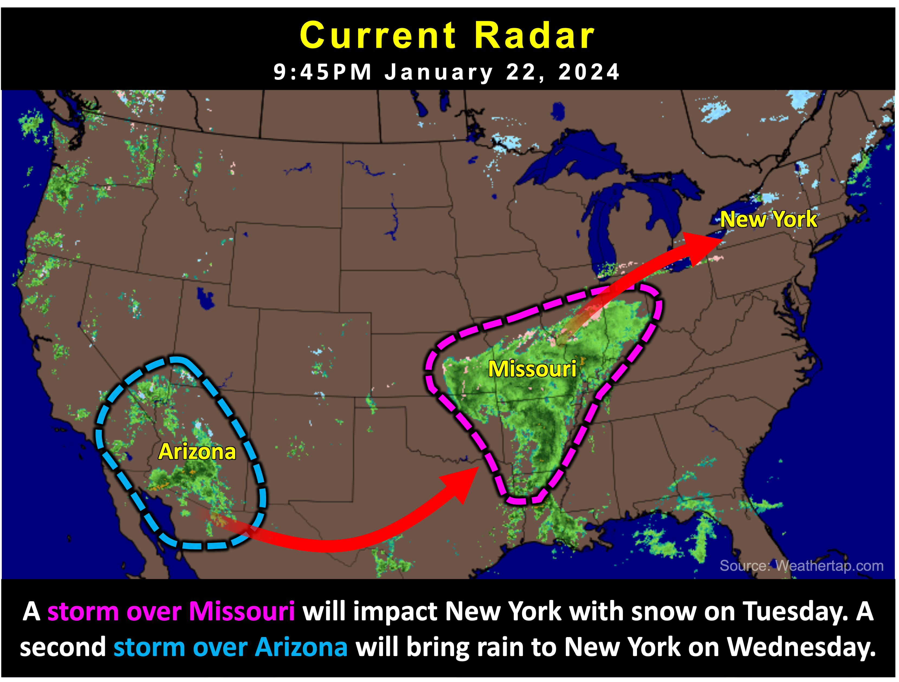

Warning: this is an old update that has been archived. This update is not current.
Cloudy wet week
School Forecast
for Wednesday January 24th
Last updated: 8:00PM Tuesday January 23, 2024
| 60% (Medium) |
|---|
| 20% (Low) |
|---|
| 0% (Nope) |
|---|
___________________
8:00PM Tuesday Update
Light sleet, freezing drizzle, and wet snowflakes will continue to be possible overnight, likely ending before 5am. As of 8PM, temperatures around the Kingston area are at 32 degrees. Temperatures will likely remain between 30 and 32 degrees overnight. With already wet roads and temperatures now dipping below freezing, areas of black ice are a concern overnight. School delays are possible tomorrow due to the threat of slick roads lingering through sunrise. After sunrise, any icy conditions should clear up pretty quickly as temperatures begin to rise above freezing. High termperatures tomorrow will make a run at 40 degrees. A round of rain will move in mid-Wednesday afternoon through Thursday night, likely followed by another dose of rain Thursday night. Neither of these next shots of rain pose any snow or ice threats for the mid-Hudson Valley.
___________________
10:00PM Monday Update
A wave of moist weather will impact us this week. This wet weather will be in the form of two phases. The first phase will be in the form of wintery weather Tuesday afternoon into Wednesday. Phase two will be in the form of rain Wednesday afternoon into Thursday.

The Forecast:
A storm currently over the mid-Mississippi River Valley will impact us with wintery precipitation beginning Tuesday. Currently, snow is likely to develop around or
after 12PM Tuesday. Light snow is likely Tuesday afternoon through about 12AM - 3AM Wednesday night. Snow may mix with sleet and be intermittent at times Tuesday
afternoon and evening. Zero to one inch of snow is likely. Temperatures on Tuesday should reach the mid-30s before falling to near 30 Tuesday night. After a dry Wednesday morning,
a second storm will pump rain into the region Wednesday afternoon into Wednesday night. Rain showers will be possible Thursday and into Friday and will be accompanied
by warmer temperatures over 10 degrees above normal for this time of year.

The Impacts:
The upcoming storm will result in slick roads Tuesday afternoon into Wednesday night. Much like last Friday's half an inch of snow, accumulations with this storm will not
be significant, however, the timing will make it somewhat impactful. Afternoon snow tomorrow will make for slick side and untreated streets. However, temperatures during the snow
tomorrow will be nearly 15 degrees warmer than last week. This means that main roads and roads that have been treated with salt will likely just be wet for most of tomorrow afternoon,
but may still become slick as temperatures fall Tuesday night. It woud not be a surprise to see school districts issue early dismissals or even a few cancellations around the mid-Hudson
Valley tomorrow. As of right now, delays are possible on Wednesday.
Next Update:
Tuesday
-Ethan
KingstonSnows | Kingston, New York
Website built by Ethan Burwell